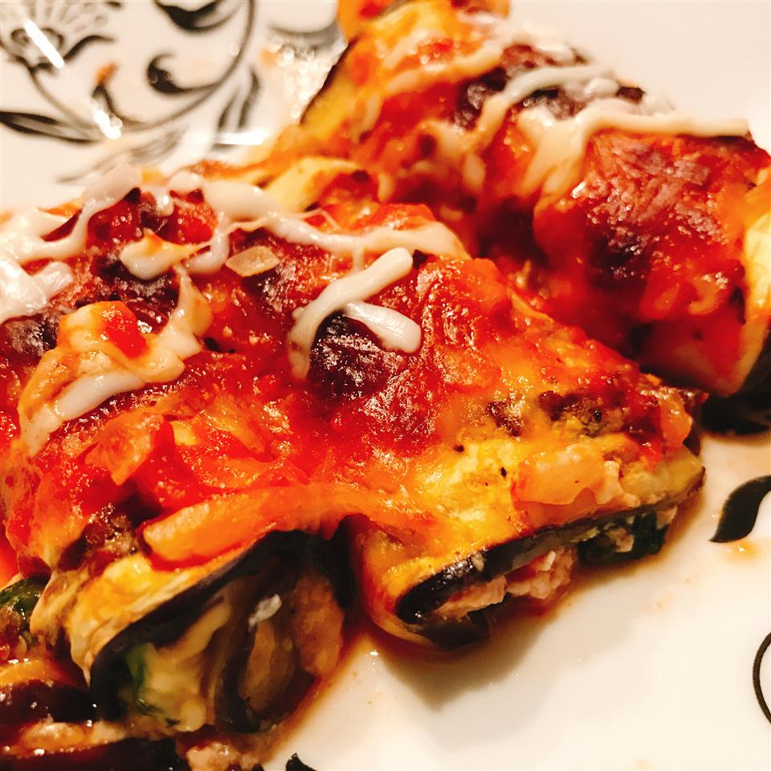

Cheesy Eggplant Rollatini

Description
Awesome recipe to impress that vegetarian friend or to simply enjoy yourself.
Ingredients
- kosher salt to taste
- 2 eggplants, cut lengthwise into 1/4-inch slices
- 1 pinch ground black pepper
- 4 cups fresh spinach
- ½ onion, chopped
- 1 clove garlic, minced, or more to taste
- 1 teaspoon Italian seasoning, or to taste
- 1 cup grated Parmigiano-Reggiano cheese
- ½ cup ricotta cheese
- 1 ½ cups marinara sauce
- 1 cup shredded mozzarella cheese
Steps
- Preheat oven to 400 degrees F (200 degrees C). Line a baking sheet with parchment paper.
- Sprinkle kosher salt over eggplant slices. Let excess moisture drain from eggplant, 10 to 15 minutes. Pat dry with paper towels and transfer to baking sheet.
- Bake in the preheated oven until softened, 8 to 10 minutes. Remove from oven and sprinkle with black pepper.
- Combine spinach, onion, and garlic in a saucepan over medium-low heat; cook and stir until spinach is wilted, 3 to 5 minutes. Season with Italian seasoning.
- Mix Parmigiano-Reggiano cheese and ricotta cheese together in a bowl. Stir in spinach mixture until well-combined.
- Spread 2 spoonfuls of spinach mixture evenly over each eggplant slice. Roll up eggplant.
- Spread 1/4 cup marinara sauce in the bottom of a 9x13-inch baking dish.
Arrange eggplant rolls seam-side down in the dish.
Pour remaining marinara sauce over rolls. Cover with mozzarella cheese.
- Bake in the preheated oven until bubbly and golden, about 1 hour. Cool for 5 to 10 minutes before serving.